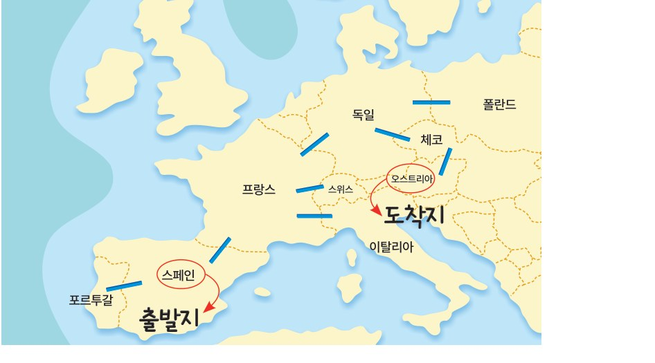

1단원 · 8월 ~ 9월 초
인공지능이 무엇인지부터 시작해서, 컴퓨터가 길을 찾는 방법까지 배웁니다. 수업에서 쓰는 슬라이드를 그대로 올려 두었으니 복습할 때 다시 넘겨 보세요.
배우는 목표
교육과정 성취기준 5개 — 1차 정기고사 출제 범위입니다.
01-01인공지능의 개념과 특성을 이해하고 인공지능과 문제를 분석한다.01-02인공지능이 문제를 해결하는 방법을 이해하고 실생활 문제에 적용한다.01-03지능적 탐색이 필요한 문제를 이해하고 탐색 과정을 구조화한다.01-04지능적 탐색 기법의 원리를 이해하고 문제 해결에 적용한다.01-05지식의 표현과 추론 방법을 이해하고 문제 해결에 적용한다.단원 흐름. 「AI가 뭔지 안다」 → 「AI가 문제를 어떻게 푸는지 안다」 → 「직접 길을 찾아 본다」 → 「AI가 지식을 담는 방법을 안다」. 가운데 탐색 부분(Ⅰ-03~Ⅰ-05)이 가장 중요하고 시간도 제일 많이 씁니다.
차시 배정
분반마다 수업 요일이 달라 날짜가 다릅니다.
| 차시 | 날짜 | 내용 |
|---|---|---|
| 1 | 8/12 (수) | 오리엔테이션 · AI 활용 규칙 |
| 2 | 8/13 (목) | Ⅰ-01 인공지능의 개념과 특성 |
| 3 | 8/14 (금) | Ⅰ-02 인공지능과 문제 해결 |
| 4~5 | 8/19 · 8/20 | Ⅰ-03 인공지능과 탐색 |
| 6~7 | 8/21 · 8/26 | Ⅰ-04 지능적 탐색의 종류 |
| 8~9 | 8/27 · 8/28 | Ⅰ-05 지능적 탐색 과정의 적용 |
| 10 | 9/3 (목) | Ⅰ-06 컴퓨터가 처리하는 지식의 표현 |
| 차시 | 날짜 | 내용 |
|---|---|---|
| 1 | 8/14 (금) | 오리엔테이션 · AI 활용 규칙 |
| 2 | 8/18 (화) | Ⅰ-01 인공지능의 개념과 특성 |
| 3 | 8/21 (금) | Ⅰ-02 인공지능과 문제 해결 |
| 4~5 | 8/24 · 8/25 | Ⅰ-03 인공지능과 탐색 |
| 6 | 8/28 (금) | Ⅰ-04 지능적 탐색의 종류 |
| 7 | 8/31 (월) | Ⅰ-05 지능적 탐색 과정의 적용 |
| 8 | 9/1 (화) | Ⅰ-06 컴퓨터가 처리하는 지식의 표현 |
| 차시 | 날짜 | 내용 |
|---|---|---|
| 1 | 8/13 (목) | 오리엔테이션 · AI 활용 규칙 |
| 2 | 8/18 (화) | Ⅰ-01 인공지능의 개념과 특성 |
| 3 | 8/20 (목) | Ⅰ-02 인공지능과 문제 해결 |
| 4~5 | 8/24 · 8/25 | Ⅰ-03 인공지능과 탐색 |
| 6 | 8/27 (목) | Ⅰ-04 지능적 탐색의 종류 |
| 7 | 8/31 (월) | Ⅰ-05 지능적 탐색 과정의 적용 |
| 8 | 9/1 (화) | Ⅰ-06 컴퓨터가 처리하는 지식의 표현 |
수업 순서
진도표 순서 그대로입니다. 카드를 누르면 그 차시에 쓸 자료로 바로 넘어갑니다. 선생님은 이 순서대로 따라오시면 되고, 학생은 오늘이 몇 차시인지만 확인하면 됩니다.
수업 슬라이드
수업에서 쓰는 슬라이드입니다. 소단원을 고르고 ← → 로 넘기세요. «화면 가득 보기»를 누르면 크게 볼 수 있습니다. 키보드 방향키로도 넘어가고, 화면 가득 볼 때는 Esc 로 닫습니다.
함께 하는 활동
Ⅰ-01 부터 Ⅰ-06 까지, 교과서 활동을 바로 굴릴 수 있게 만들었습니다. 화면에 띄워 놓고 함께 진행하세요. 위 차시별 순서에서 오늘 할 활동을 확인하세요.
카드를 눌러 AI가 맞다 / 아니다로 나눠 보세요. 다 고르면 채점됩니다. 틀린 것은 왜 틀렸는지 이유가 나옵니다.
정리 질문 「자동으로 움직이는 것」과 「스스로 판단하는 것」의 차이는 무엇일까요?
교과서 14~15쪽 활동입니다. 아래 1 → 5 단계를 순서대로 따라가면 됩니다. 적은 내용은 자동으로 저장되고, 마지막에 제출용 활동지가 만들어집니다.
아래 역할 설정 프롬프트를 챗봇에 한 번만 붙여넣으세요. 그다음부터는 질문이 나올 때마다 «이번 질문만 복사»로 붙여넣으면 됩니다.
기록한 답변을 다시 읽고, 관객이 한 명씩 눌러 투표하세요. 모두 투표한 뒤 «정답 공개»를 누릅니다.
아래 내용이 자동으로 만들어졌습니다. 복사하거나 파일로 저장해서 선생님이 안내한 곳에 올리세요.
기기를 하나 고르고, 인식과 이해 · 학습 · 추론 · 자율성 중 몇 개를 가지고 있는지 따져 보세요. 근거를 말할 수 있어야 합니다.
해 보기 네 칸을 눌러 «있다/없다»를 정해 보세요.
교과서 20~21쪽 활동입니다. 칸을 차례로 채우면 설계 카드가 완성됩니다. 다 채우면 «AI다움 진단»으로 진짜 인공지능다운 아이디어인지 확인해 보세요.
발표 모둠에서 가장 좋은 아이디어를 하나 골라 1분 안에 발표합니다. 3번(무엇을 판단하나)과 4번(어떤 데이터로)은 꼭 말해 주세요.
교과서 24쪽에 나오는 바로 그 숫자판입니다.
빈칸 옆에 있는 숫자를 누르면 빈칸으로 미끄러져 들어갑니다.
목표 숫자판과 똑같이 만들어 보세요.
«새로 섞기»를 누르면 매번 새로운 판이 나옵니다.
어떤 판이 나와도 반드시 풀 수 있고, 최소 몇 번이면 풀리는지 알려 줍니다.
빈칸이 가운데인 것에 주의하세요. 교과서 목표 숫자판은 1 2 3 / 4 □ 5 / 6 7 8 입니다.
풀고 나서 방금 여러분이 한 일이 바로 탐색입니다. 머릿속에서 «이걸 옮기면 가까워질까?»를 따져 봤지요? 컴퓨터도 똑같이 합니다.
교과서 24~25쪽입니다. 선생님이 왼쪽 낱말을 설명하면 여러분은 오른쪽 칸을 채우며 따라옵니다.
문제 설명에서 꼭 필요한 것만 골라 보세요. 여러 개 고를 수 있습니다.
초기 상태에서 움직일 수 있는 숫자는 2 와 1 두 개입니다. 어느 쪽이 목표에 가까워지는 수일까요?
이제 여러분이 컴퓨터입니다. 맞은 칸이 늘어나는 쪽으로만 움직여 목표까지 가 보세요. 움직일 때마다 아래에 탐색 트리가 자라납니다.
교과서 26~27쪽 활동입니다. 스페인에서 오스트리아까지, 거쳐 가는 나라가 가장 적은 길을 찾아봅시다. 파란 선으로 이어진 나라끼리만 갈 수 있어요.
유럽 지도입니다. 파란 선으로 이어진 나라끼리만 오갈 수 있어요. 스페인에서 출발해 오스트리아까지 갑니다.

이 복잡한 지도를 점과 선으로 간단히 줄인 것이 그래프입니다. 지도와 아래 그래프를 번갈아 보면서 빈칸에 들어갈 나라를 골라 보세요.
스페인 🇪🇸
출발하는 곳. 문제가 주어진 시점입니다.
오스트리아 🇦🇹
도착하는 곳. 여기 닿으면 문제가 풀린 것입니다.
스페인에서 한 번에 갈 수 있는 나라를 모두 골라 보세요.
교과서 38~39쪽 활동을 우리 동네 지도로 바꿨습니다. 집에서 학교까지, 숫자는 걸리는 시간(분)입니다. 너비 우선 탐색과 A* 알고리즘으로 각각 풀어 보고 무엇이 다른지 비교합니다.
집 🏠
학교 🏫
이어진 길로 한 칸 이동
가까운 곳부터 차례차례 전부 살펴봅니다. 힌트는 쓰지 않아요. «한 걸음 더»를 누르며 몇 군데를 보는지 세어 보세요.
이번에는 힌트(h)를 함께 씁니다. f = g + h 가 가장 작은 곳부터 갑니다.
교과서 42쪽의 바로 그 격자를 우리 학교 복도로 바꿨습니다. 회색은 벽이라 지나갈 수 없고, 상하좌우로 한 칸씩만 움직입니다.
코드를 몰라도 괜찮습니다. 컴퓨터가 길을 찾는 순서를 카드로 만들어 놨어요. 순서대로 눌러서 알고리즘을 완성해 보세요. 틀리면 알려 줍니다.
한글로 쓴 진짜 파이썬 코드입니다. 카드 번호와 나란히 읽어 보세요.
열린칸 = [출발] # ① 출발을 넣는다
닫힌칸 = []
while 열린칸: # ⑦ 빌 때까지 되풀이
지금 = 가장작은칸(열린칸) # ② f 가 제일 작은 칸을 꺼낸다
if 지금 == 목표: # ③ 목표면 끝!
break
닫힌칸.append(지금) # ⑥ 살펴본 칸으로 옮긴다
for 이웃 in 갈수있는칸(지금): # ④ 이웃의 f 를 구해서
열린칸.append(이웃) # ⑤ 열린칸에 넣는다교과서는 heapq 라는 도구를 씁니다. 「가장 작은 것을 알아서 꺼내 주는 상자」예요.
위 코드의 가장작은칸() 을 대신해 주는 것뿐입니다. 지금은 몰라도 괜찮고,
Ⅱ단원에서 코랩으로 직접 다뤄 봅니다.
import heapq
open_list = [(0, start)]
while open_list:
f, current = heapq.heappop(open_list) # 가장 작은 f 를 꺼낸다
if current == goal:
break
for nb in neighbors(current):
heapq.heappush(open_list, (g + h, nb))선생님이 나눠 주신 「탐색 알고리즘 학습지」 다섯 문제입니다. 종이에 먼저 풀어 보고, 여기서 한 걸음씩 눌러 확인하세요. 답을 적고 «맞나 볼까요»를 누르면 채점과 해설이 나옵니다.
경험적(휴리스틱) 탐색에 대한 설명입니다. (가)(나)(다)에 알맞은 탐색 방법의 이름을 고르세요.
아래는 8-퍼즐에서 언덕 등반 탐색의 첫 번째 탐색 과정입니다. 동그라미 숫자는 평가 함숫값(목표와 같은 자리에 있는 타일 수)이에요. 지금 자리는 5인데, 자식 넷 중 5를 넘는 것이 하나도 없습니다.
평가 함숫값 = 목표와 같은 자리에 있는 타일 수이고, 클수록 먼저 고릅니다. 위·아래·왼·오른쪽으로 한 칸씩만 움직이고, 한 번 평가한 판은 다시 평가하지 않습니다.
f(n) = g(n) + h(n) — g는 지금까지 실제로 온 도로 거리, h는 그 도시에서 g까지의 직선거리(파란 숫자)입니다.
△는 내 차례(Max), ▽는 상대 차례(Min), ○는 평가 함숫값입니다. 「한 걸음 더」를 누르면 아래에서 위로 값이 접혀 올라가고, 잘리는 가지는 흐려집니다.
사실과 규칙만 있으면 컴퓨터는 새로운 사실을 만들어 냅니다. 여러분도 할 수 있어요. 여섯 문제를 풀어 보세요!
이번엔 여러분이 규칙을 만들 차례입니다. 우리 반, 우리 학교, 우리 집 — 무엇이든 좋아요. 엉뚱할수록 재미있습니다.
한 걸음씩 보는 탐색
교과서 30~34쪽에 나오는 바로 그 예제입니다. «한 걸음 더»를 누를 때마다 컴퓨터가 딱 한 칸씩 움직입니다. 아래 설명을 소리 내어 읽으면서 따라가 보세요.
일단 끝까지 내려간다! 갈 수 있는 데까지 쭉 내려갔다가, 막히면 갈림길로 되돌아와서 다른 길로 갑니다. 미로에서 한쪽 벽만 짚고 가는 것과 비슷해요.
교과서 말로는 — 탐색 트리에서 연결된 노드가 있는 한 계속 전진하여 탐색하고, 더 이상 연결된 노드가 없으면 이전 노드 중 탐색을 이어 나갈 수 있는 노드까지 되돌아가 다른 경로로 탐색을 이어 나간다.
같은 층부터 싹 훑는다! 한 층을 전부 본 다음에야 아래층으로 내려갑니다. 가까운 곳부터 차례차례 찾는 방법이에요.
교과서 말로는 — 탐색한 노드와 연결되어 있는 같은 깊이의 노드를 모두 탐색한다. 같은 깊이의 탐색이 끝나면 가장 왼쪽 노드와 연결된 노드를 탐색한다. 가로 방향으로 진행하다가 목표 노드를 찾으면 종료한다.
제일 좋아 보이는 것부터! 목표에 가장 가까워 보이는 것을 먼저 골라 갑니다. 여기서는 맞은 숫자 칸이 많을수록 좋은 것으로 봅니다.
교과서 말로는 — 초기 상태에서 목표 상태까지 가기 위해 남은 거리가 가장 짧거나 가장 좋은 경로라고 판단되는 지점을 선택해서 탐색한다. 지나간 노드를 포함해 후보에 있는 노드 중에서 고른다는 점이 중요합니다.
지금까지 온 거리 + 앞으로 갈 거리! 둘을 더해서 가장 작은 곳부터 갑니다. 최상 우선 탐색이 «앞»만 봤다면, A*는 «뒤»도 같이 봅니다.
교과서 말로는 — 최상 우선 탐색은 목표 상태를 찾는 것만 목표로 하지만, 문제 중에는 목적지까지의 최단 경로까지 고려해야 하는 것도 있습니다. A*는 목표에 도달할 가능성과 어떤 경로로 찾아가는지를 모두 고려합니다.
서술형 대비입니다. 답을 소리 내어 말해 본 뒤 펼쳐 보세요.
인식과 이해 · 학습 · 추론 · 자율성. 센서로 외부를 인식하고(인식과 이해), 기계학습으로 배우고(학습), 배운 것으로 결론을 내고(추론), 사람 개입 없이 스스로 판단해 행동합니다(자율성).
① 문제 정의하기 — 문제를 분석해 핵심 요소를 뽑아낸다.
② 초기 상태와 목표 상태 설정하기 — 어디서 출발해 어디로 갈지 정한다.
③ 수행 작업 선택하기 — 다음 상태로 가는 한 수를 고른다. 목표에 가까워지는 쪽으로.
④ 수행 작업 적용 및 문제 해결하기 — 적용해서 목표 상태에 도달한다. 이 과정을 탐색 트리로 나타낸다.
판정관이 대화만으로 사람과 컴퓨터를 구별하지 못했다는 뜻입니다. 컴퓨터가 실제로 «생각»하는지를 따지는 게 아니라, 사람처럼 보이는지를 봅니다. 통과했다고 사람과 동등한 것은 아닙니다.
탐색에 대한 정보나 경험을 활용하는가. 쓰지 않으면 맹목적 탐색(깊이 우선·너비 우선), 쓰면 정보 이용 탐색(최상 우선·A*)입니다.
더 이상 갈 수 있는 노드가 없을 때. 이전 노드로 되돌아가서 아직 안 가 본 다른 경로로 탐색을 이어 갑니다.
f(n) = g(n) + h(n). g(n)은 출발점에서 지금 노드까지 실제로 온 거리, h(n)은 지금 노드에서 목표까지 예상 거리입니다. 온 길과 갈 길을 함께 보기 때문에 최단 경로를 보장합니다.
최상 우선 탐색은 앞으로 남은 거리(h)만 보고, A*는 지금까지 온 거리(g)까지 함께 봅니다. 그래서 최상 우선은 빨리 찾지만 먼 길일 수 있고, A*는 더 많이 살펴보지만 가장 짧은 길을 찾습니다. — 활동 ⑨ 「매점 가기」에서 이 차이가 숫자로 드러납니다.
데이터 오늘 기온은 9도이다 (사실의 기록) → 정보 평년보다 높다 (가공해서 의미가 생김) → 지식 가벼운 외투를 입어야겠다 (판단에 쓸 수 있게 됨) → 지혜 앞으로도 미리 기온을 확인해야겠다 (원리를 깨달음).
사용자 인터페이스 사람과 시스템이 정보를 주고받는 통로 ·
지식 베이스 전문가의 지식을 저장 ·
추론 엔진 지식 베이스를 이용해 새로운 사실을 추론.
«지식 베이스가 추론한다»고 쓰면 틀립니다. 추론은 추론 엔진의 일입니다.
답이 하나가 아닙니다. 「무엇을 보고 → 무엇을 판단하는지」가 들어가야 점수를 받습니다.
예) 스팸 메일 분류 — 메일의 제목·보낸 사람·본문 특징을 보고 스팸일 확률을 판단해 자동으로 분류한다.
«자동으로 분류된다»만 쓰면 자동화 설명이라 부족합니다.
Ⅰ-06에서 «규칙은 항상 맞지 않는다», «전문가 지식을 다 모으기 어렵다»를 봤지요? 그 한계 때문에 기계학습이 나왔습니다. Ⅱ단원은 그 이야기로 시작합니다.
쓰는 도구 · 오렌지3(설치 필요) · 구글 코랩(설치 불필요)
활동 ④의 6번 칸과 활동 ⑪의 «이 규칙이 틀릴 수 있는 경우» — 그 질문이 Ⅲ단원의 전부입니다. 미리 연습해 둔 셈이에요.
이어지는 평가 · 인공지능 윤리 수행평가 20%
Ⅳ단원에서 여러분은 진짜 인공지능 모델을 만듭니다. 그때 필요한 것이 활동 ④의 7칸과 똑같습니다.
이어지는 평가 · 인공지능 모델 제작 프로젝트 30%